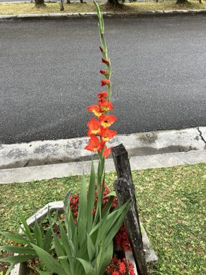

うるがいの話 ある日
最新: 楽天Ｅｄｙ【うるがいの話 ある日】とは 一日だけのプログです
『うるがいの話』の最新一日だけのプログで、通信料が少なく経済的だ。カニの画像をクリックすると全ての日付が載る『うるがいの話』サイトを表示します
|
|
【うるがいの話】 うるがい(ｳﾙｶﾞｲ urugai)とは、『もずくがに』の名前でとても大きくなります。 |
|---|---|
|
|
【カミマヤーの話】 猫のことを方言でマヤーといいます。カミマヤー（kamimayaa）とは、神の猫のことです。 |
|
【たながぁの音楽】 たながぁ（ﾀﾅｶﾞｰ tanagaa）とは手長えびのことで、何種類かあり大きいのは車 エビぐらいになります。 |

|
【ぶながぁの話】 ぶながぁ(ﾌﾞﾅｶﾞｰ bunagaa)とは、赤い髪の毛、赤い身体、そして身長は１ｍ２０ｃｍ ぐらい、川の蟹を食べているの目撃された。場所は沖縄県国頭郡大宜味村のと ある村僕の隣近所に住んでいる爺さんから、聞いた話です。 |
|
|
【ギーマの話】 ギーマ(giima)とは、山原の里山に咲くスズランに似た、 花を付けます。実は食べられます、 気が付くと口の周りが紫になっています。 |
2026年04月06日 (月）楽天Ｅｄｙ
16:24
先月新しいクレジットカードが、届いた。早速、Ｅｄｙでチャ
ージするべと、ン、チャージができない。あえ！、まだ古いカ
ードが使えるから？。で、古いカードの期限が切れたので、ま
たチャージしてみた。だめだった！、クレジットカードに電話
するかと、その前にネットで調べてみた。
このたび、ＡＮＡアメリカン・エキスプレス提携カードの「楽
天Ｅｄｙ」の付帯を終了することとなりました。「楽天Ｅｄｙ
」をこれまでご利用いただきありがとうございました。
２０２５年４月７日（月）以降に発送する新規、更新カードお
よび再発行カードより、楽天Ｅｄｙが付帯されていないカード
となります。「楽天Ｅｄｙ」付帯終了日が確定いたしましたら
、こちらのページでご案内いたします。
オオ、メール来なかったヨ。どうすべ、楽天Ｅｄｙは・・・・
当面利用しないことにする。
カードの裏面みると、左の古いカードには楽天Ｅｄｙがあるが
右の新しいカードには、確かにない。貰った時点で、分かる筈
だが、マ、そこまでみないし。送られてきた、楽天Ｅｄｙにつ
いては説明にもなにも説明がなかったし。
ＡＩにクレジットカードのサインを編集してと、頼んだら断れ
た。
